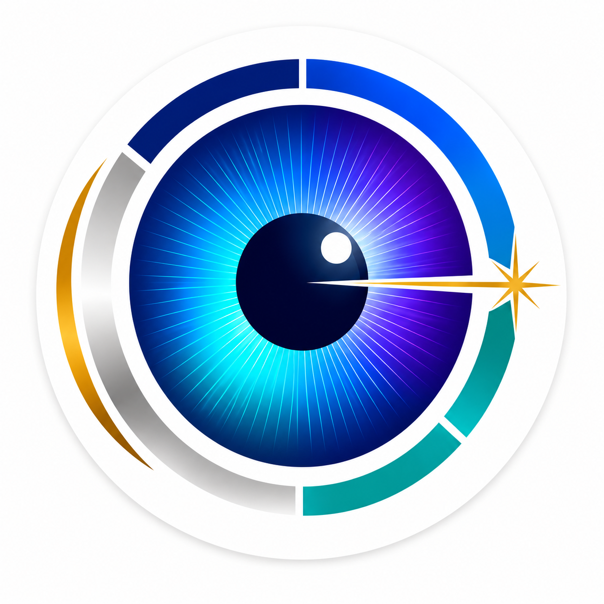

Cataract care and lens options
Clear guidance on surgery and lens choices for sharper, more comfortable vision.
Book Consultation
Vision Vistara Optics & Lasers Eye CareAdvanced Eye Hospital & Optical Center
Expert consultation, modern diagnosis, patient-first treatment planning, and premium optical solutions under one calm, trusted roof.
About The Optometrist
Siddagoni Saidulu, DOA, brings 20 years of eye care experience to Vision Vistara Optics & Lasers Eye Care, a modern clinic and optical center built for trusted consultation and precise treatment planning.
With expertise in eye lasers, he focuses on careful evaluation, suitability checks, and patient-friendly guidance before treatment decisions.
Every visit is designed around a patient-first approach: clear explanations, advanced diagnostics, careful lens and surgery guidance, and confident next steps.
Main Services
Major services are organized around what patients actually need: accurate answers, safe treatment, and better everyday vision.
Clear guidance on surgery and lens choices for sharper, more comfortable vision.
Book ConsultationEligibility-focused laser vision correction planning for suitable candidates.
Check EligibilityTimely retina evaluation for vision changes, diabetes-related concerns, and follow-up care.
Book Retina ConsultStructured testing and monitoring to protect long-term eye health.
Book EvaluationAdvanced measurements that support accurate treatment decisions.
View ScansPremium lens categories and frame solutions matched to lifestyle and prescription.
Explore OpticalWhy Choose Us
Important Eye Care Paths
Choose the care path that matches your symptoms or goal, then book a focused consultation.
For blurred vision, glare, cloudy sight, or lens selection questions.
For people who want to reduce dependence on glasses or contact lenses.
For diabetes-related eye issues, floaters, flashes, or sudden vision changes.
For eye pressure, optic nerve concerns, family history, or side vision changes.
For reading strain, driving comfort, screen use, sunlight glare, and daily clarity.
Advanced Diagnostics
Vision decisions become easier when the measurements are precise. These diagnostic tools support consultation, cataract planning, LASIK screening, retina review, and glaucoma monitoring.
Premium Optical Center
Retail-friendly optical support with premium lens categories for work, reading, driving, screens, and sunlight.
Simple clarity for distance or reading.
Two-zone correction for near and far vision.
Seamless vision across daily distances.
Adaptive lenses that respond to outdoor light.
Reduced glare for driving and outdoor comfort.
Screen-friendly lenses for digital routines.
Cleaner lens appearance and better night comfort.
Patient Reviews
The optometrist explained my eye report clearly and did not rush the consultation.
The staff helped me book quickly on WhatsApp and guided me through every step.
The clinic felt clean, modern, and very professional from reception to testing.
I received clear lens guidance for my work and driving needs. Very smooth experience.
FAQ
Book a consultation for blurred vision, eye pain, redness, headaches, floaters, flashes, diabetes-related eye concerns, or difficulty reading and driving.
No. Suitability depends on your prescription, corneal shape, corneal thickness, age, and eye health. A LASIK evaluation confirms whether it is right for you.
Cataract planning may use AL / IOL scan and corneal scans. Glaucoma evaluation may include OCT, visual fields, eye pressure checks, and optic nerve assessment.
Yes. Free optometrist consultation and free LASIK evaluation options are highlighted for patients. Call or WhatsApp 7842938316 before visiting.
Use the form below, call directly, or message on WhatsApp. The team will help confirm a suitable appointment time.
Contact & Appointments
For consultation, LASIK evaluation, cataract guidance, retina care, glaucoma evaluation, scans, or optical lenses, contact the clinic directly.